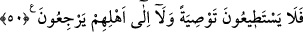
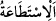
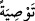

kıyametin kendilerine gelmeyeceğini iddiâ etmesinler.
İbn Abbâs (r.a.)’tan rivâyet edildiğine göre şöyle demiştir: “Kıyâmet mutlaka
kopacaktır. O zaman alış veriş için iki kişi elbiselerini açarlar da (kıyâmet ansızın
koptuğundan) elbiselerini toplayamayazlar. Yine bir kişi havuzunu sıvayıp tâmir eder,
fakat havuzun suyunu kullanamaz. Yine bir kişi sağmal devesinin sütünü sağıp gelir
de sütü içemez. Yine bir adam lokmasını ağzına götürür, fakat onu yiyemez.” Sonra
“Onlar, birbirleriyle çekişip dururken kendilerini ansızın yakalayacak korkunç bir
sesi bekliyorlar.” âyetini okudu.
Rivâyete göre Allah Teâlâ Yemen tarafından ipekten daha yumuşak ve miskten daha
hoş kokulu bir rüzgâr gönderir. Bu rüzgâr kalbinde zerre kadar imanı olan her mü’minin
canını alacak. Sonra insanların en şerli olanları hiçbir dini tanımadan yüz yıl kalırlar.
Onlar çarşılarında alış-veriş yaparken kıyamet üstlerine kopar.
Eğer ‘Onlar kıyameti beklemiyorlardı. Bilakis kıyâmetin ve böyle korkunç bir sesin
olmadığına kesin olarak inanıyorlardı’ dersen, şöyle cevap veririm: Evet, doğru. Ancak
onların “bu tehdid ne zaman gerçekleşecektir?” sözlerinin zâhirine göre kendileri
bekliyor kabul edilmiştir. Çünkü ‘Falanca iş ne zaman olacak?’ diyen kimsenin
sözünden o işin olmasının beklediği anlaşılır.
50. İşte o anda onlar ne bir vasiyyette bulunabilirler, ne de ailelerine dönebilirler.
“İşte o anda onlar ne bir vasiyyette bulunabilirler” yâni vasiyette bulunmaya güç
yetiremezler.
“
” fiilin gerçekleşmesini sağlayan güç demektir.
Vasiyyet sözlükte bir şeyi diğerine bitiştirmek, diğerine eklemektir. Mal veya
nafakadan bir kısmını ölümünden sonra ilzâm etmeye/bağlamaya da “vasiyyet” denir.
Çünkü kişi vasiyyet etmekle hayatında olan bir husûsu ölümünden sonra olan bir hususa
bağlamıştır.
“
” kelimesinin nekre yapılması onu genelleştirmek içindir. Yani onlar âileleri
arasında idiyseler işlerinden hiçbiri hakkında vasiyette bulunamazlar.
Şeyhzâde der ki: “Basit bir kelime ve tek bir sözle bile herhangi bir vasiyette
bulunamazlar. Buna muktedir olamayınca daha başka îfâsında uzun zamana muhtaç
oldukları bir takım görevleri yerine getirmekten, yaptıkları haksızlıkların ödenmesi ve
benzerlerini yapmaktan tamamen âciz olurlar. Çünkü söz söylemek iş yapmaktan daha
kolaydır. Çok basit bir söz bile söylemekten âciz olduklarına göre kıyametin onlara en
küçük bir imkân ve fırsat vermeyeceği ortaya çıkmıştır. Ölmek üzere olan kimse için
son nefeste son söz olarak söylenecek en önemli söz vasiyyet etmek olduğu için burada
söz cinsinden vasiyyet seçilmiştir. İşte bundan âciz olan başkalarından fazlasıyla âciz